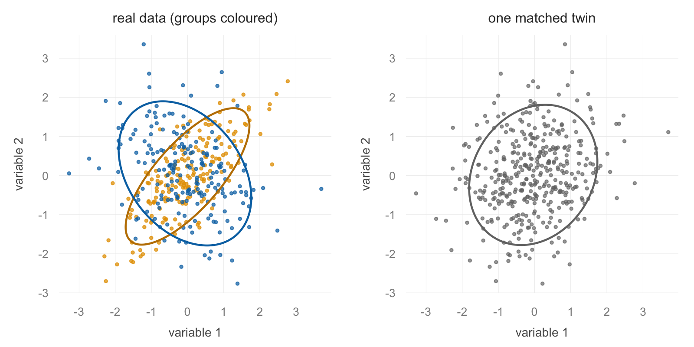
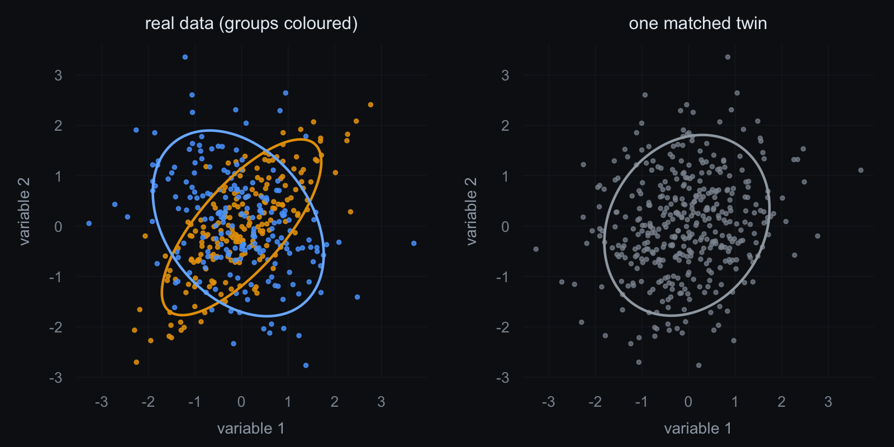

flexmix (Leisch, 2004; Grün and Leisch, 2008) is the
general framework for finite mixture models in R: one EM engine,
exchangeable model drivers, and a stepFlexmix() loop that
fits a range of component numbers and hands back the best by BIC. That
selected number inherits the problem this package exists for. On data
with skew or correlation, BIC often prefers several components even when
the population is a single undivided cloud, so the number describes the
data’s shape at least as often as it describes subpopulations, and
nothing in the flexmix output says which reading you are entitled
to.
The matched-null test asks the deciding question: would a dataset
with the same margins and the same correlations, but no subpopulations,
have led stepFlexmix() to the same number? The main vignette and the accompanying paper run
that audit through mclust. Pointing it at flexmix instead
takes about ten lines, but two of those lines are easy to get wrong in
quiet ways, which is what this article is for.
library(matchednull)
library(flexmix)The pipeline being audited
For model-based clustering of continuous data the flexmix driver is
FLXMCmvnorm(), and a standard component-count workflow
looks like this:
fits <- stepFlexmix(x ~ 1, k = 1:4, nrep = 3,
model = FLXMCmvnorm(diagonal = FALSE))
best <- getModel(fits, which = "BIC")
best@kstepFlexmix() fits each k from
nrep random starts and keeps the best run;
getModel() picks the BIC winner across k. Note
diagonal = FALSE: the driver’s default is diagonal
covariance, which cannot represent within-component correlation at all
and therefore reads any correlation in the data as extra
components. Full covariance is the right default for an audit, and it is
the analogue of the unconstrained "VVV" model in
mclust.
Wrapping it as a statistic
matched_null_test() wants the pipeline as a function
that takes a data matrix and returns one number. For flexmix:
pick_k <- function(d) {
fits <- flexmix::stepFlexmix(
d ~ 1, k = 1:4, nrep = 3,
model = flexmix::FLXMCmvnorm(diagonal = FALSE),
verbose = FALSE
)
flexmix::getModel(fits, which = "BIC")@k
}Three details carry the correctness of the wrapper.
-
Return
@k, not thekyou asked for. flexmix’s EM removes components whose prior probability collapses, so a fit requested atk = 4can converge with fewer.@kis the converged count,@k0the requested one, and the audit is about what the pipeline reports, which is@k. -
Leave the randomness inside. The random restarts of
stepFlexmix()are part of the pipeline being audited, so do not plant aset.seed()inside the wrapper where it would hand every twin the same restart sequence. One seed outside, beforematched_null_test(), makes the whole audit reproducible while letting each twin meet the pipeline’s randomness on its own terms. -
Silence the progress output.
stepFlexmix()prints one line per fit by default, and the twin loop calls it a few hundred times.verbose = FALSEbelongs in the wrapper, not in the caller’s memory.
Example 1: a count that is only the data’s shape
A single lognormal population with ordinary correlations, and no subpopulations by construction:
set.seed(2026)
S <- matrix(c(1, .6, .4, .3,
.6, 1, .5, .4,
.4, .5, 1, .6,
.3, .4, .6, 1), 4, 4)
x_skew <- exp(matrix(rnorm(300 * 4), 300, 4) %*% chol(S))
pick_k(x_skew)
#> [1] 4BIC selects four components on data that contain one population. That is not a flexmix bug and not fixed by more restarts; a skewed cloud really is fit better, per parameter, by several Gaussian pieces. The question is whether “four” says anything beyond the skew, and the twins, which share the margins and correlations but contain no subpopulations, answer it:
set.seed(7)
matched_null_test(x_skew, pick_k, R = 200)
#> Matched-null test (200 null twins)
#> real statistic: 4
#> null interval: [3, 4]
#> p (real >= nulls): 0.935
#> verdict: null-like (within the twins' interval)The real count sits inside the interval the twins produce. Four components is what this shape produces under this pipeline, and reading it as four kinds of observation would be reading the skew twice.
Example 2: components the margins cannot see
The opposite verdict, on data where the groups are real but invisible to any single variable. Two groups share identical margins and differ only in the orientation of their correlations, one correlated positively, the other weakly negatively (the strongest negative exchangeable correlation that stays positive definite in four dimensions is modest):
set.seed(11)
Spos <- matrix(.75, 4, 4); diag(Spos) <- 1
Sneg <- matrix(-.225, 4, 4); diag(Sneg) <- 1
x_mix <- rbind(matrix(rnorm(200 * 4), 200, 4) %*% chol(Spos),
matrix(rnorm(200 * 4), 200, 4) %*% chol(Sneg))
pick_k(x_mix)
#> [1] 2

Each margin is exactly standard normal in both groups, and the pooled correlation is near zero, so the twins are built from almost uncorrelated Gaussian dependence and stay a single featureless cloud (right panel). The structure lives entirely in the joint dependence, which is the regime the matched null exists to protect:
set.seed(12)
matched_null_test(x_mix, pick_k, R = 200)
#> Matched-null test (200 null twins)
#> real statistic: 2
#> null interval: [1, 1]
#> p (real >= nulls): 0.005
#> verdict: exceeds the null (beyond margins + covariance)Every twin comes back at one component and the real data stand at two. This is the same pattern as panel A of the positive controls in How the matched-null test works: groups that no histogram and no correlation matrix could reveal, found by the pipeline and confirmed against the null. The two examples bracket the point of the audit. The pipeline said “four” in one and “two” in the other, and only the twins say which number was information.
Cost, and running the twins in parallel
The audit runs the full stepFlexmix() sweep once per
twin: with k = 1:4 and nrep = 3 that is twelve
EM fits per twin, a few thousand fits at R = 200. The
examples above take a few minutes each on one core. Since the twins are
independent, the loop parallelises through future.apply if you ask
for it:
future::plan("multisession")
matched_null_test(x_mix, pick_k, R = 200, parallel = TRUE)Seeded parallel runs are reproducible at any worker count, but they
draw from a different random stream than parallel = FALSE,
so pick one setting per analysis and keep it.
The habits that transfer
Everything else about the audit is unchanged from the mclust case. Inspect the margins first, because a variable that is already bimodal carries its groups into the twins and the count test is the wrong instrument there. And an exceedance under the Gaussian twins licenses “structure beyond margins and correlations”, not yet “types”; the t-copula rung that separates heavy-tailed dependence from genuine subpopulations is described in How the matched-null test works, and it applies to a flexmix pipeline exactly as written, since the rung lives in the null, not in the pipeline.
References
Grün, B., and Leisch, F. (2008). FlexMix version 2: Finite mixtures with concomitant variables and varying and constant parameters. Journal of Statistical Software, 28(4), 1-35. https://doi.org/10.18637/jss.v028.i04
Leisch, F. (2004). FlexMix: A general framework for finite mixture models and latent class regression in R. Journal of Statistical Software, 11(8), 1-18. https://doi.org/10.18637/jss.v011.i08
Meng, M. (2026). Types Without Taxa: A Covariance-Matched-Null Multiverse Test of Categorical versus Continuous Personality Structure. Preregistration: https://doi.org/10.17605/OSF.IO/2EKCG